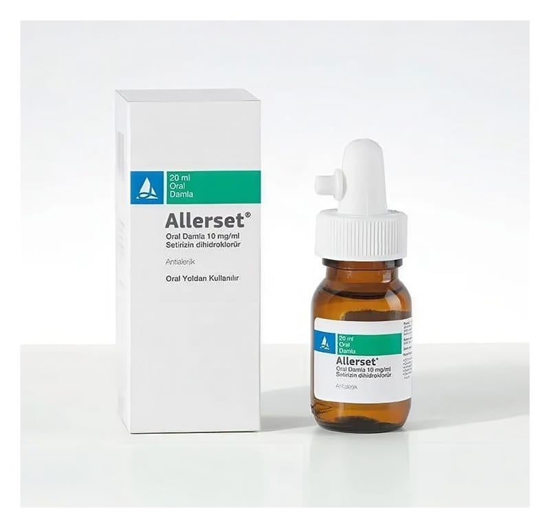

Allerset 10 mg/ml Oral Damla, Çözelti, 20 ml

Ne için kullanılır
KT · Bölüm 1ALLERSET®, 20 ml’lik bal rengi şişelerde, plastik damlalığı ile birlikte sunulur. Berrak çözelti görünümündedir.
ALLERSET®alerjik nezle ve kurdeşen tedavisinde kullanılan bir ilaçtır.
ALLERSET®; Erişkinler ile 2 yaş ve üzeri çocuklarda; - Alerjik nezlenin burun ve göz ile ilgili belirtilerinin tedavisinde ve ürtikerin (kurdeşen) tedavisinde kullanılır.